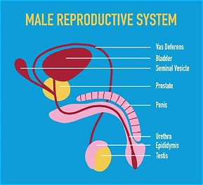
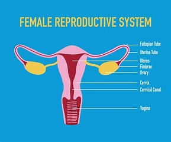
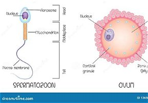
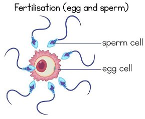

WEEK 8: THE REPRODUCTIVE SYSTEM
8.1 Meaning of Reproduction
Reproduction is the process by which living things produce young ones (offspring) of their own kind.
Importance of reproduction:
- It continues the species so that it does not become extinct.
- It increases the population.
- It passes traits (characteristics) from parents to offspring.
In human beings, reproduction is sexual: a male sex cell (sperm) joins with a female sex cell (ovum or egg) to form a zygote. This joining is called fertilisation. The zygote develops into a baby.
8.2 The Male Reproductive Organs and Their Functions
| Part | Function |
|---|---|
| Testes (singular: testis) | Two oval organs that produce sperm cells and the hormone testosterone |
| Scrotum | A bag of skin that holds the testes outside the body and keeps them slightly cooler than body temperature, which is the best temperature for making sperm |
| Epididymis | A coiled tube on each testis where sperm are stored and mature |
| Sperm duct (vas deferens) | A tube that carries sperm from the epididymis to the urethra |
| Seminal vesicle and prostate gland | Produce fluids that mix with sperm to form semen, which feeds and helps sperm to swim |
| Urethra | A tube that carries semen (and also urine, but not at the same time) out of the body |
| Penis | The male organ that passes urine and delivers semen into the female body during mating |

8.3 The Female Reproductive Organs and Their Functions
| Part | Function |
|---|---|
| Ovaries (two) | Produce egg cells (ova) and the hormones oestrogen and progesterone |
| Fallopian tubes (oviducts) | Carry the egg from the ovary to the womb; fertilisation usually takes place here |
| Womb (uterus) | A muscular, pear-shaped organ where a fertilised egg attaches and the baby grows |
| Cervix | The narrow opening (neck) of the womb |
| Vagina | A muscular tube that receives sperm and serves as the birth canal through which the baby is born; also the passage for menstrual blood |
| Vulva | The outer opening/external part of the female reproductive system |

8.4 Human Sex Cells (Gametes)
Sex cells (gametes) are the special cells used in reproduction. Each carries half of the information needed to make a new person.
Sperm cell (male gamete)
- Very small, with a head, middle piece and tail.
- The head carries the nucleus (genetic material).
- The middle piece contains many mitochondria that supply energy.
- The tail lashes from side to side so the sperm can swim.
- Produced in the testes, in millions, from puberty onward.
Ovum / egg cell (female gamete):
- Larger than the sperm, round in shape, and cannot move on its own.
- Contains a nucleus and stored food (cytoplasm) to feed the early embryo.
- Produced in the ovaries; one egg is usually released each month from puberty to about 45–55 years of age (menopause).
| Feature | Sperm | Ovum |
|---|---|---|
| Size | Very small | Bigger (largest human cell) |
| Movement | Can swim (has a tail) | Cannot move on its own |
| Number | Millions produced | One released monthly |
| Where produced | Testes | Ovaries |
| Food store | Little | Contains food store |
Fertilisation and development (simple outline):
- A sperm cell meets an egg in the fallopian tube.
- The sperm enters the egg, and their nuclei join: the zygote forms.
- The zygote divides repeatedly to form a ball of cells (embryo).
- The embryo moves to the womb and attaches to its wall.
- It grows into a foetus, nourished through the placenta and umbilical cord.
- After about 9 months (40 weeks) the baby is born.
Note on twins: Identical twins come from one fertilised egg that splits in two; fraternal twins come from two separate eggs fertilised by two separate sperm.


8.5 Care of the Reproductive System
For both boys and girls:
- Bathe daily and wash the private parts with clean water and mild soap (outside only).
- Wear clean, dry, cotton underwear and change it daily.
- Dry the private area well after bathing.
- Use clean toilets and wipe from front to back (especially girls).
- Avoid touching the private parts with dirty hands.
- Avoid inserting any object into the private parts.
- Drink plenty of clean water and eat a balanced diet.
- Avoid early sex, multiple partners and unprotected sex, which can lead to infections (STIs), HIV/AIDS and unwanted pregnancy.
- Go to the hospital early if there is pain, itching, discharge, sores or a bad smell.
- Do not use harsh substances (e.g. strong soaps or disinfectants) on the private parts.
- Avoid tight-fitting underwear and clothing.
- Avoid abuse: know that your body belongs to you. Report anyone who touches you inappropriately to a trusted adult.
For boys:
- Pull back the foreskin (if not circumcised) and wash gently.
- Wear protective gear during sports.
- Report any pain or swelling in the testes to a doctor at once.
For girls:
- Follow proper menstrual hygiene (Week 2).
- Do not use douches or perfumed products inside the vagina.
Abstinence (not having sex before marriage) is the best and only 100% safe way to avoid STIs and teenage pregnancy.